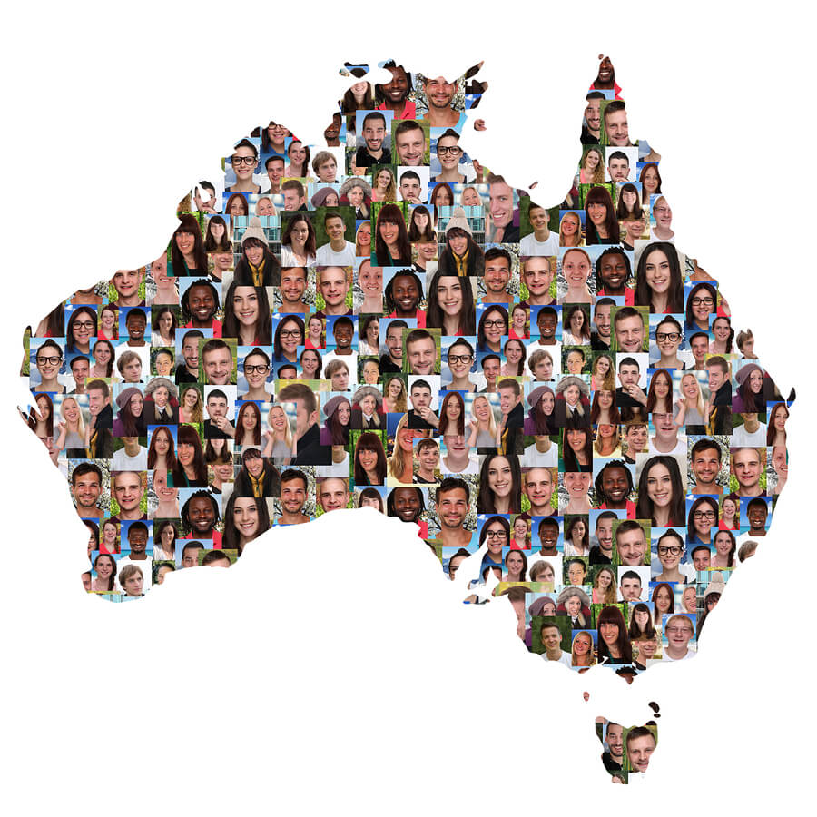

UNDERSTANDING THE DATA
Two sources reveal different parts of Australia's story
Australia's cultural diversity can be explored from two complementary perspectives. The Australian Bureau of Statistics Census provides a detailed snapshot of where people live, where they were born and the languages spoken at home.
Settlement data from the Department of Home Affairs provides another perspective, showing how migrants arriving through Skilled, Family and Humanitarian streams are distributed throughout Australia.

Australia's diversity begins with where people come from and the languages they speak
Australia's overseas-born population represents communities from across the world, while the languages spoken at home reveal another layer of cultural diversity.
Cultural diversity is concentrated differently across Australia
The overseas-born population is not distributed evenly. Some areas have a particularly high share of overseas-born residents, while others contain much larger concentrations of overseas-born residents overall.
Cultural diversity takes a different form in every state and territory
Looking beyond national totals reveals important differences between states in both migration and language. Some states have higher overseas-born populations, while others stand out through particular language communities.
A CLOSER COMPARISON
New South Wales and Victoria show distinct language profiles
Australia's two most populous states contain many of the same major language communities, but the size of those communities differs considerably.
Australia's migration story connects local communities to the world
Recent settlement patterns demonstrate how migration links major origin countries with different Australian states.
The relative importance of Skilled migration differs between states over time
The proportion of each state's permanent settlers entering through the Skilled stream changes from year to year, producing shifts in the relative ranking of states and territories.
Migration streams contribute to Australian states in different ways
Skilled, Family and Humanitarian migration streams vary greatly in size and are distributed differently across Australia's states and territories.